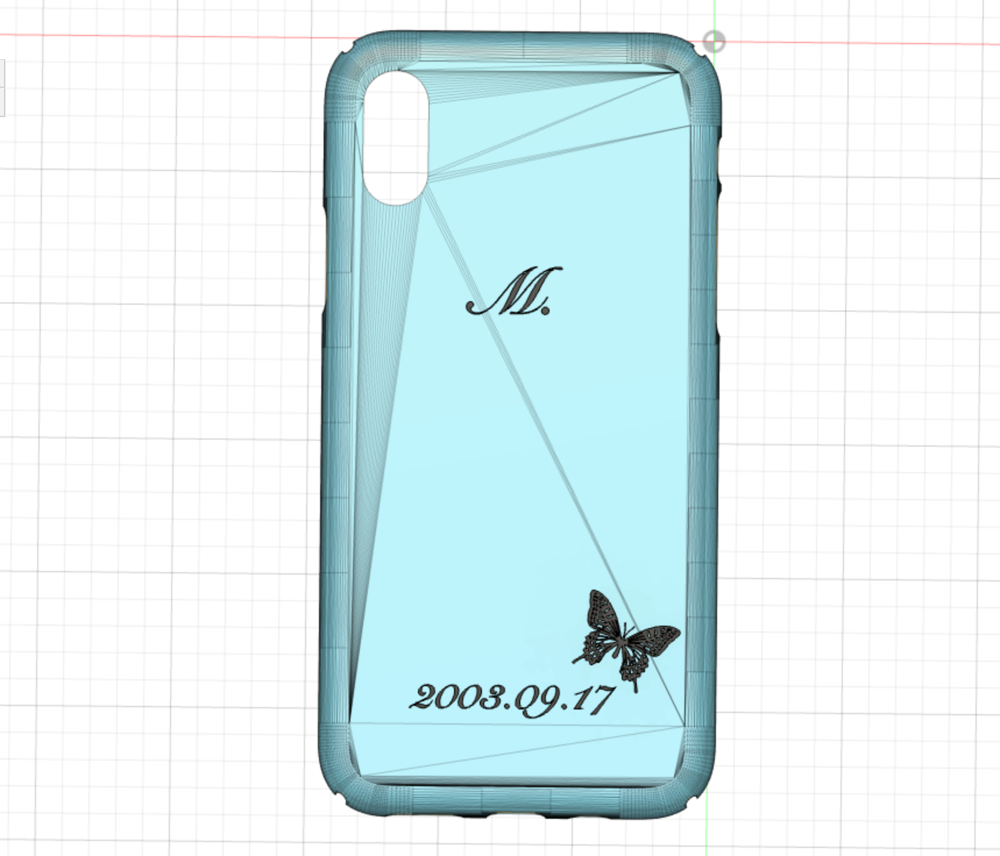
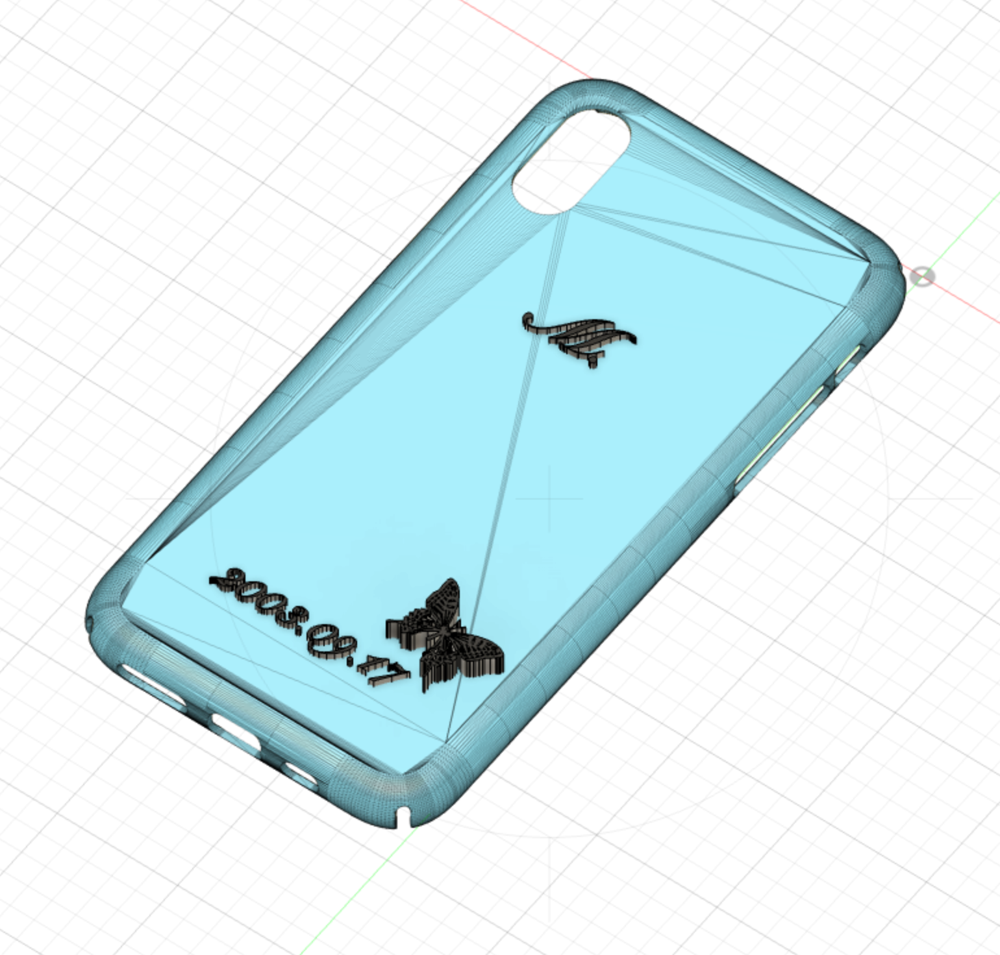
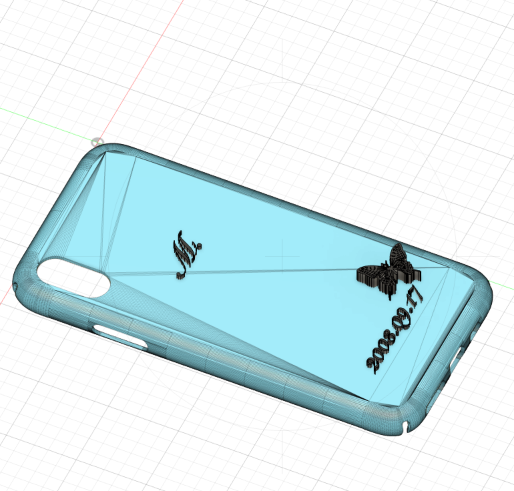
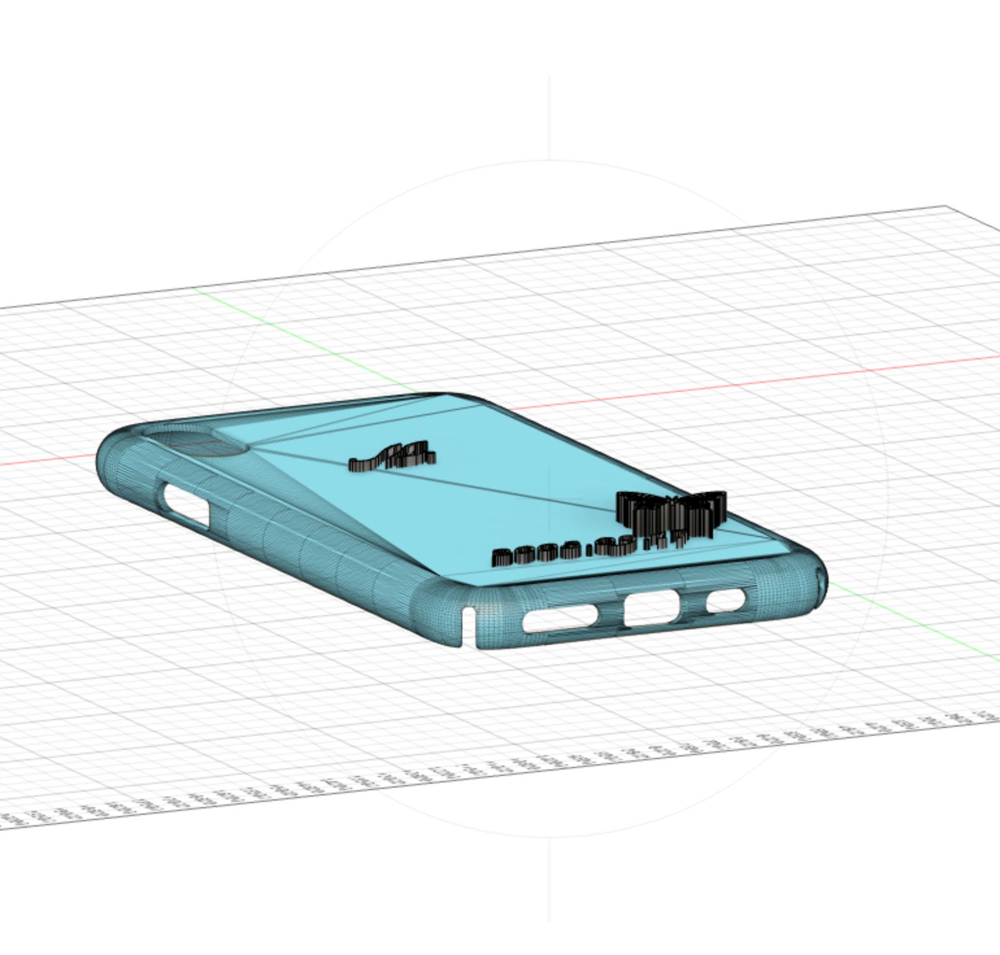
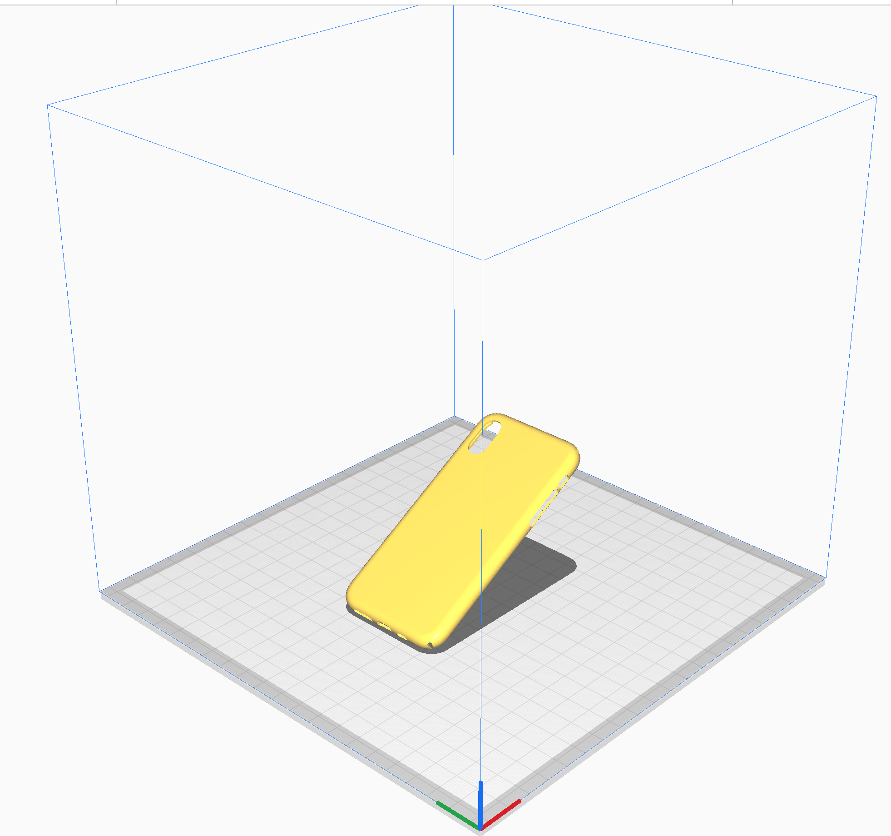

Final Project
[作品の説明]
iPhone case
私が使っているスマホの機種はXSだ。お店に行くと最新のケースばかりでXS対応のケースなどあまり見かけなくなっている。
だが、個人的に最近のiPhoneのデザインはカメラの主張がすごいのでケースのために極力機種変はしたくない。
そこで自分でスマホケースを作ろうと思った。
[デザイン]





[反省点]
自分の想像よりも3Fプリンターより遥かにスマホケースのサイズの方が大きかった。
思っていたよりも3Dプリンターでスマホケースを作るのに時間がかかるということが分かり、今回は時間的に無理だったので断念。
せっかくデザインしたので時間に余裕がある時に挑戦してみたい。